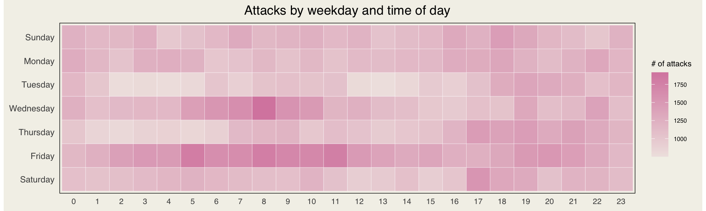
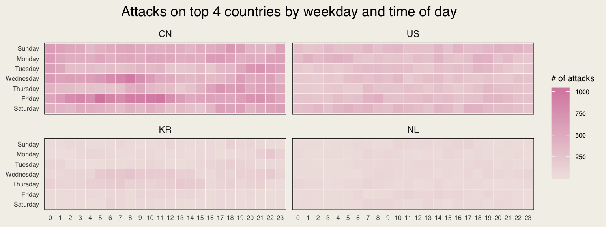
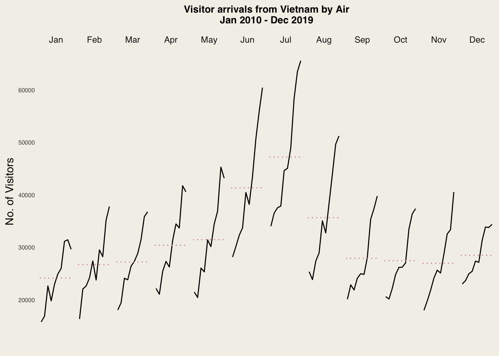
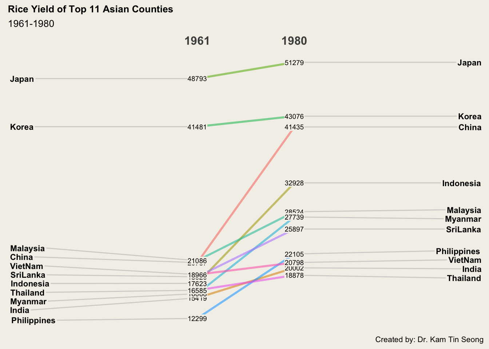

pacman::p_load(tidyverse, scales, viridis, lubridate, ggthemes, gridExtra, readxl, knitr, data.table, CGPfunctions)Hands-on Exercise 07
tidyverse
lubridate
gridExtra
CGPfunctions
Visualising and Analysing Time-oriented Data
1 Overview
This hands-on exercise aims to plot the following data visualsations with R:
calender heatmap by using ggplot2 functions,
cycle plot by using ggplot2 function,
slopegraph
horizon chart
2 Getting Started
Loading the packages
Use the pacman package p_load() to check, install and launch the following R packages:
| Library | Description |
|---|---|
| lubridate | an R package that makes it easier to work with dates and times |
| tidyverse | a family of R packages for data processing |
| gridExtra | Provides a number of user-level functions to work with “grid” graphics, notably to arrange multiple grid-based plots on a page, and draw tables. |
| knitr | a package that enables integration of R code into LaTeX, LyX, HTML, Markdown, AsciiDoc, and reStructuredText documents. |
| data.table | an R package that provides an enhanced version of a data.frame |
3 Plotting Calendar Heatmap
In this section, we will:
plot a calender heatmap by using ggplot2 functions and extension
write function using R programming
derive specific date and time related field by using base R and lubridate packages
perform data preparation task by using tidyr and dplyr packages.
3.1 Import data
In this hands-on exercise, eventlog.csv file will be used. This data file consists of 199,999 rows of time-series cyber attack records by country.
attacks <- read_csv("data/eventlog.csv")3.2 Examine data structure
kable() can be used to review the structure of the imported data frame.
There are three columns, namely timestamp, source_country and tz.
timestamp: stores date-time values in POSIXct format. (from 2015/03/12 to 2015/12/24)
source_country: stores the source of the attack. It is in ISO 3166-1 alpha-2 country code.
tz: field stores time zone of the source IP address.
kable(head(attacks))| timestamp | source_country | tz |
|---|---|---|
| 2015-03-12 15:59:16 | CN | Asia/Shanghai |
| 2015-03-12 16:00:48 | FR | Europe/Paris |
| 2015-03-12 16:02:26 | CN | Asia/Shanghai |
| 2015-03-12 16:02:38 | US | America/Chicago |
| 2015-03-12 16:03:22 | CN | Asia/Shanghai |
| 2015-03-12 16:03:45 | CN | Asia/Shanghai |
summary(attacks) timestamp source_country tz
Min. :2015-03-12 15:59:16.72 Length:199999 Length:199999
1st Qu.:2015-04-17 22:30:53.34 Class :character Class :character
Median :2015-06-16 17:29:01.86 Mode :character Mode :character
Mean :2015-06-28 08:34:47.76
3rd Qu.:2015-08-17 14:20:30.10
Max. :2015-12-24 04:37:00.61 3.3 Data Preparation
Step 1: Deriving weekday and hour of day fields
Before we can plot the calender heatmap, two new fields namely wkday and hourneed to be derived. In this step, we will write a function to perform the task.
# covert timestamp
make_hr_wkday <- function(ts,sc,tz){
real_times <- ymd_hms(ts,
tz=tz[1], # retrieve first timezone only
quiet = TRUE)
# create data frame with country code, weekday and hour info
dt <- data.table(source_country = sc,
wkday= weekdays(real_times),
hour=hour(real_times))
return(dt)
}weekdays()is a base R function.
Step 2: Deriving the attacks tibble data frame
# create weekday order
wkday_levels <- c('Saturday', 'Friday',
'Thursday', 'Wednesday',
'Tuesday', 'Monday',
'Sunday')
# create new data frame "attacks"
attacks <- attacks %>%
group_by(tz) %>% # group by timezone
# apply make_hr_wkday function to data
do(make_hr_wkday(.$timestamp,
.$source_country,
.$tz)) %>%
ungroup() %>%
# convert wkday and hour fields into factor
mutate(wkday = factor(
# make sure weekday order start from Sun and end in Sat
wkday, levels = wkday_levels),
# make sure weekday order start from 00:00 and end in 23:00
hour = factor(hour, levels = 0:23))Table below shows the tidy tibble table after processing.
kable(head(attacks))| tz | source_country | wkday | hour |
|---|---|---|---|
| Africa/Cairo | BG | Saturday | 20 |
| Africa/Cairo | TW | Sunday | 6 |
| Africa/Cairo | TW | Sunday | 8 |
| Africa/Cairo | CN | Sunday | 11 |
| Africa/Cairo | US | Sunday | 15 |
| Africa/Cairo | CA | Monday | 11 |
3.4 Building the Calendar Heatmaps
grouped <- attacks %>%
count(wkday, hour) %>% # count the number of combo (wkday*hour)
ungroup() %>%
na.omit() # remove missing value
ggplot(grouped,
aes(hour,wkday,
fill = n))+
geom_tile(color="white", size=0.1)+
# works well for minimalist heatmaps
theme_tufte(base_family = "Helvetica")+
# ensures that the x and y axes have the same scale
coord_equal()+
scale_fill_gradient(name = "# of attacks",
low = "#D989AE22",
high = "#D989AE") +
labs(x = NULL, y = NULL,
title = "Attacks by weekday and time of day") +
theme(axis.ticks = element_blank(),
plot.title = element_text(hjust = 0.5),
legend.title = element_text(size = 8),
legend.text = element_text(size = 6),
panel.background = element_rect(fill = "#f3f1e9"),
plot.background = element_rect(fill = "#f3f1e9",color = NA),
axis.text.x = element_text(size=8)
)
Learn from the code chunk above
a tibble data table called grouped is derived by aggregating the attack by wkday and hour fields.
a new field called n is derived by using
group_by()andcount()functions.na.omit()is used to exclude missing value.geom_tile()is used to plot tiles (grids) at each x and y position.colorandsizearguments are used to specify the border color and line size of the tiles.theme_tufte()of ggthemes package is used to remove unnecessary chart junk. To learn which visual components of default ggplot2 have been excluded, you are encouraged to comment out this line to examine the default plot.coord_equal()is used to ensure the plot will have an aspect ratio of 1:1.scale_fill_gradient()function is used to creates a two colour gradient (low-high).
3.5 Building Multiple Calendar Heatmaps
Step 1: Deriving attack by country object
In order to identify the top 4 countries with the highest number of attacks, we will:
count the number of attacks by country
calculate the percent of attackes by country
save the results in a tibble data frame
attacks_by_country <- count(
attacks, source_country) %>%
mutate(percent = percent(n/sum(n))) %>% # create new column "percent"
arrange(desc(n)) # sorting desc by countStep 2: Preparing the tidy data frame
In this step, we are required to extract the attack records of the top 4 countries from attacks data frame and save the data in a new tibble data frame (i.e. top4_attacks).
# for sorting purpose
top4 <- attacks_by_country$source_country[1:4]
top4_attacks <- attacks %>%
filter(source_country %in% top4) %>%
count(source_country, wkday, hour) %>%
ungroup() %>%
mutate(source_country = factor(
source_country, levels = top4
))%>%
na.omit()Step 3: Plotting the Multiple Calender Heatmap by using ggplot2 package
ggplot(top4_attacks,
aes(hour, wkday, fill=n))+
geom_tile(color="white", size=0.1)+
theme_tufte(base_family = "Helvetica") +
coord_equal() +
scale_fill_gradient(name = "# of attacks",
low = "#D989AE22",
high = "#D989AE") +
facet_wrap(~source_country, ncol = 2)+
labs(x = NULL, y = NULL,
title = "Attacks on top 4 countries by weekday and time of day") +
theme(axis.ticks = element_blank(),
plot.title = element_text(hjust = 0.5),
legend.title = element_text(size = 8),
legend.text = element_text(size = 6),
panel.background = element_rect(fill = "#f3f1e9"),
plot.background = element_rect(fill = "#f3f1e9",color = NA),
axis.text.x = element_text(size=6),
axis.text.y = element_text(size=6)
)
4 Plotting Cycle Plot
In this section, we will learn how to plot a cycle plot showing the time-series patterns and trend of visitor arrivals from Vietnam programmatically by using ggplot2 functions.
4.1 Import data
The code chunk below imports arrivals_by_air.xlsx by using read_excel() of readxl package and save it as a tibble data frame called air:
air <- read_excel("data/arrivals_by_air.xlsx")4.2 Examine data structure
kable(head(air))| Month-Year | Republic of South Africa | Canada | USA | Bangladesh | Brunei | China | Hong Kong SAR (China) | India | Indonesia | Japan | South Korea | Kuwait | Malaysia | Myanmar | Pakistan | Philippines | Saudi Arabia | Sri Lanka | Taiwan | Thailand | United Arab Emirates | Vietnam | Belgium & Luxembourg | CIS | Finland | France | Germany | Ireland | Italy | Netherlands | Spain | Switzerland | United Kingdom | Australia | New Zealand |
|---|---|---|---|---|---|---|---|---|---|---|---|---|---|---|---|---|---|---|---|---|---|---|---|---|---|---|---|---|---|---|---|---|---|---|---|
| 2000-01-01 | 3291 | 5545 | 25906 | 2883 | 3749 | 33895 | 13692 | 19235 | 65151 | 59288 | 21457 | 507 | 27472 | 1177 | 2150 | 8404 | 1312 | 3922 | 15766 | 12048 | 1318 | 1527 | 1434 | 2703 | 1634 | 4752 | 12739 | 1292 | 3544 | 4962 | 925 | 3731 | 28986 | 34616 | 5034 |
| 2000-02-01 | 2357 | 6120 | 28262 | 2469 | 3236 | 34344 | 19870 | 18975 | 37105 | 58188 | 19634 | 199 | 29084 | 1161 | 2496 | 9128 | 623 | 3988 | 24861 | 12745 | 899 | 2269 | 1596 | 1182 | 1297 | 6391 | 13093 | 1200 | 2897 | 5054 | 747 | 3980 | 35148 | 26030 | 3938 |
| 2000-03-01 | 4036 | 6255 | 30439 | 2904 | 3342 | 27053 | 17086 | 21049 | 44205 | 74426 | 20719 | 386 | 30504 | 1355 | 2429 | 11691 | 1578 | 4259 | 18767 | 16971 | 1474 | 2034 | 1548 | 1088 | 1220 | 5528 | 13645 | 1368 | 2717 | 4950 | 935 | 3576 | 36117 | 31119 | 4668 |
| 2000-04-01 | 4241 | 4521 | 25378 | 2843 | 5117 | 30464 | 22346 | 26160 | 45480 | 49985 | 17489 | 221 | 34478 | 1593 | 2711 | 14141 | 705 | 6579 | 22735 | 20397 | 1284 | 2420 | 1592 | 1012 | 1208 | 5544 | 13366 | 1345 | 2512 | 4149 | 941 | 3850 | 33792 | 34824 | 6890 |
| 2000-05-01 | 2841 | 3914 | 26163 | 2793 | 4152 | 30775 | 16357 | 35869 | 38350 | 48937 | 19398 | 164 | 34795 | 1397 | 2594 | 13305 | 679 | 4625 | 18399 | 15769 | 1042 | 1833 | 1167 | 660 | 743 | 4225 | 10878 | 1067 | 2205 | 3643 | 764 | 3025 | 23377 | 33139 | 7006 |
| 2000-06-01 | 2776 | 3487 | 28179 | 3146 | 5018 | 26720 | 18133 | 31314 | 47982 | 53798 | 17522 | 440 | 34660 | 1715 | 2924 | 10555 | 2749 | 4740 | 21042 | 17217 | 1545 | 2480 | 1170 | 712 | 982 | 4047 | 9054 | 1363 | 2196 | 3544 | 855 | 2580 | 21769 | 35731 | 7634 |
summary(air) Month-Year Republic of South Africa Canada
Min. :2000-01-01 00:00:00 Min. : 687 Min. : 1096
1st Qu.:2004-12-24 06:00:00 1st Qu.:1996 1st Qu.: 4506
Median :2009-12-16 12:00:00 Median :2421 Median : 5420
Mean :2009-12-15 23:00:00 Mean :2582 Mean : 5687
3rd Qu.:2014-12-08 18:00:00 3rd Qu.:2883 3rd Qu.: 6549
Max. :2019-12-01 00:00:00 Max. :7370 Max. :11927
USA Bangladesh Brunei China
Min. : 4578 Min. : 802 Min. : 419 Min. : 3118
1st Qu.:25400 1st Qu.: 3984 1st Qu.: 3629 1st Qu.: 48709
Median :29902 Median : 7289 Median : 4398 Median : 74344
Mean :31584 Mean : 6753 Mean : 4601 Mean : 96568
3rd Qu.:35752 3rd Qu.: 9254 3rd Qu.: 5304 3rd Qu.:139373
Max. :65200 Max. :12195 Max. :10036 Max. :294899
Hong Kong SAR (China) India Indonesia Japan
Min. : 3978 Min. : 9935 Min. : 10143 Min. : 4700
1st Qu.:18371 1st Qu.: 32476 1st Qu.: 54086 1st Qu.:38348
Median :25733 Median : 49047 Median : 97466 Median :46334
Mean :26426 Mean : 52103 Mean :100319 Mean :47847
3rd Qu.:32186 3rd Qu.: 66248 3rd Qu.:143048 3rd Qu.:57074
Max. :61067 Max. :146781 Max. :196581 Max. :99193
South Korea Kuwait Malaysia Myanmar
Min. : 1798 Min. : 4.0 Min. : 6677 Min. : 671
1st Qu.:20092 1st Qu.: 247.5 1st Qu.: 32454 1st Qu.: 2158
Median :23924 Median : 391.0 Median : 55916 Median : 5552
Mean :26279 Mean : 586.0 Mean : 55453 Mean : 5790
3rd Qu.:31160 3rd Qu.: 684.2 3rd Qu.: 75847 3rd Qu.: 8363
Max. :51129 Max. :2878.0 Max. :111825 Max. :17940
Pakistan Philippines Saudi Arabia Sri Lanka
Min. : 335 Min. : 4209 Min. : 26.0 Min. : 1392
1st Qu.:1070 1st Qu.:15956 1st Qu.: 541.8 1st Qu.: 4610
Median :1282 Median :31780 Median : 783.0 Median : 5406
Mean :1495 Mean :32244 Mean :1006.4 Mean : 5861
3rd Qu.:1723 3rd Qu.:44988 3rd Qu.:1199.5 3rd Qu.: 6907
Max. :4733 Max. :69808 Max. :6427.0 Max. :13239
Taiwan Thailand United Arab Emirates Vietnam
Min. : 825 Min. : 2534 Min. : 246 Min. : 839
1st Qu.:12768 1st Qu.:17936 1st Qu.: 1889 1st Qu.: 7349
Median :16244 Median :24864 Median : 3957 Median :19132
Mean :17920 Mean :26418 Mean : 3995 Mean :19714
3rd Qu.:22407 3rd Qu.:33558 3rd Qu.: 5342 3rd Qu.:28684
Max. :41208 Max. :54359 Max. :10584 Max. :65554
Belgium & Luxembourg CIS Finland France
Min. : 296 Min. : 287 Min. : 158.0 Min. : 1070
1st Qu.:1360 1st Qu.: 1620 1st Qu.: 856.5 1st Qu.: 5551
Median :1664 Median : 3704 Median :1217.0 Median : 8558
Mean :1735 Mean : 3871 Mean :1505.1 Mean : 9014
3rd Qu.:2038 3rd Qu.: 5032 3rd Qu.:1888.5 3rd Qu.:11083
Max. :4398 Max. :14407 Max. :4855.0 Max. :24736
Germany Ireland Italy Netherlands Spain
Min. : 3377 Min. : 313 Min. : 212 Min. : 1564 Min. : 161
1st Qu.:11083 1st Qu.:1324 1st Qu.: 2343 1st Qu.: 4570 1st Qu.: 1270
Median :13550 Median :1520 Median : 3206 Median : 5118 Median : 2081
Mean :15263 Mean :1561 Mean : 3842 Mean : 5320 Mean : 2466
3rd Qu.:18482 3rd Qu.:1777 3rd Qu.: 4605 3rd Qu.: 5854 3rd Qu.: 3068
Max. :33439 Max. :2557 Max. :20617 Max. :10701 Max. :11531
Switzerland United Kingdom Australia New Zealand
Min. : 712 Min. :10126 Min. : 10727 Min. : 2615
1st Qu.: 3632 1st Qu.:28972 1st Qu.: 43252 1st Qu.: 6728
Median : 4988 Median :33986 Median : 61599 Median : 8539
Mean : 5392 Mean :33928 Mean : 61740 Mean : 8550
3rd Qu.: 7160 3rd Qu.:38704 3rd Qu.: 76505 3rd Qu.:10184
Max. :10512 Max. :54669 Max. :109142 Max. :16844 4.3 Data Preperation
Step 1: Deriving month and year fields
air$month <- factor(month(air$`Month-Year`),
levels = 1:12,
labels = month.abb, # convert month num to abb (01 to Jan)
ordered = TRUE) # ordered factor
air$year <- year(ymd(air$`Month-Year`))Step 2: Extracting the target country
Next, the code chunk below is use to extract data for the target country (i.e. Vietnam)
Vietnam <- air %>%
select(`Vietnam`, month, year) %>%
filter(year >= 2010)
kable(head(Vietnam))| Vietnam | month | year |
|---|---|---|
| 15781 | Jan | 2010 |
| 16335 | Feb | 2010 |
| 18061 | Mar | 2010 |
| 22154 | Apr | 2010 |
| 21461 | May | 2010 |
| 28146 | Jun | 2010 |
str(Vietnam)tibble [120 × 3] (S3: tbl_df/tbl/data.frame)
$ Vietnam: num [1:120] 15781 16335 18061 22154 21461 ...
$ month : Ord.factor w/ 12 levels "Jan"<"Feb"<"Mar"<..: 1 2 3 4 5 6 7 8 9 10 ...
$ year : int [1:120] 2010 2010 2010 2010 2010 2010 2010 2010 2010 2010 ...Step 3: Computing year average arrivals by month
The code chunk below uses group_by() and summarise() of dplyr to compute year average arrivals by month.
# calculate mean value for ref line
hline_data <- Vietnam %>%
group_by(month) %>%
summarise(avgValue = mean(`Vietnam`))4.4 Plotting the cycle plot
The code chunk below is used to plot the cycle plot:
ggplot()+
geom_line(data = Vietnam,
aes(x= year,y=`Vietnam`, group = month),
color = "black")+
geom_hline(data = hline_data,
aes(yintercept = avgValue),
linetype = "dotted",
color = "#D989AE",
size = 0.5 )+
facet_grid(~month)+
labs(axis.text.x = element_blank(),
title = "Visitor arrivals from Vietnam by Air\nJan 2010 - Dec 2019") +
xlab("") +
ylab("No. of Visitors")+
theme_tufte(base_family = "Helvetica")+
theme(axis.ticks = element_blank(),
plot.title = element_text(size=10,hjust = 0.5, face="bold"),
legend.title = element_text(size = 8),
legend.text = element_text(size = 6),
panel.background = element_rect(fill = "#f3f1e9", color=NA),
plot.background = element_rect(fill = "#f3f1e9",color = NA),
axis.text.x = element_blank(),
axis.text.y = element_text(size=6)
)
5 Plotting Slopegraph
5.1 Import data
rice <- read_csv("data/rice.csv")5.2 Examine data structure
Import the rice data set into R environment by using the code chunk below:
kable(head(rice))| Country | Year | Yield | Production |
|---|---|---|---|
| China | 1961 | 20787 | 56217601 |
| China | 1962 | 23700 | 65675288 |
| China | 1963 | 26833 | 76439280 |
| China | 1964 | 28289 | 85853780 |
| China | 1965 | 29667 | 90705630 |
| China | 1966 | 31445 | 98403990 |
summary(rice) Country Year Yield Production
Length:550 Min. :1961 Min. :12299 Min. : 764158
Class :character 1st Qu.:1973 1st Qu.:21722 1st Qu.: 6515902
Mode :character Median :1986 Median :30548 Median : 13351700
Mean :1986 Mean :34945 Mean : 33829459
3rd Qu.:1998 3rd Qu.:44713 3rd Qu.: 33488900
Max. :2010 Max. :75967 Max. :202771840 5.3 Plot the slopegraph
Code chunk below will be used to plot a basic slopegraph:
rice %>%
# turn year into factor for plotting
mutate(Year = factor(Year)) %>%
filter(Year %in% c(1961,1980)) %>%
newggslopegraph(Year, Yield, Country,
Title = "Rice Yield of Top 11 Asian Counties",
SubTitle = "1961-1980",
Caption = "Created by: Dr. Kam Tin Seong",
DataLabelFillColor = "#f3f1e9")+
theme(axis.ticks = element_blank(),
plot.title = element_text(size=10,hjust = 0, face="bold"),
legend.title = element_text(size = 8),
legend.text = element_text(size = 6),
panel.background = element_rect(fill = "#f3f1e9", color=NA),
plot.background = element_rect(fill = "#f3f1e9",color = NA),
axis.text.x = element_blank(),
axis.text.y = element_blank()
)
Learn from the code chunk above
For effective data visualisation design, factor() is used convert the value type of Yearfield from numeric to factor.
6 Reference
- Kam, T.S. (2025). Visualising and Analysing Time-oriented Data